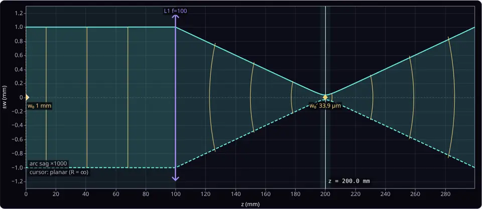

Video course · EN
Algorithms & Data Structures
76 interview problems walked through step by step in Python, from arrays to graphs and dynamic programming.
Software engineer · Berlin
I build software for the age of agents, and free courses for everyone learning to code.
MCP servers that let AI assistants drive Blender and ParaView, a benchmark that checks how code really scales, a real-time strategy engine written from scratch, and more than twenty courses and guides you can read right here.
Now building
Tools that give AI models real software to work with, a way to measure what code costs, and the largest thing I have built: a strategy game on its own engine.
 AI drives the software
AI drives the software
Ask in plain language and an assistant builds 3D scenes or scientific visualisations through 27 and 34 explicit, readable tool calls.
See the AI work Checks what code costs
Checks what code costs
Fit the growth curve of any program from its timings, and format the Markdown and LaTeX that models write so every renderer shows it right.
See both Built from the renderer up
Built from the renderer up
Rome against Carthage in a real-time strategy game on a custom C++20 and OpenGL engine, for Linux, macOS and Windows.
See the engineAlso: VideoGenome, OpenCaption, LLM Queries, developer tools, games, and an archive of earlier work.
All projectsLearn for free · English & Polish
Long-form notes I keep improving, from algorithms and Linux to databases, numerical methods and statistics. Every chapter is free to read here, with no sign-up.
76 interview problems walked through step by step in Python, from arrays to graphs and dynamic programming.

Python from zero, in Polish, with 309 exercises you write and check right in the browser.
Try it in your browser
55 tools that run on this site: more than twenty optics labs with real units, algorithm visualisers, and a few games. Change a number and watch the physics or the algorithm respond.
 Optics
OpticsSet slit width, spacing and wavelength, then measure the fringes.
 Algorithms
AlgorithmsWatch the algorithms swap and compare, step by step.
 Game · neural net
Game · neural netA network learns your habits live. Stay unpredictable.
 Optics
OpticsReflection, refraction, Brewster and critical angles.

OpticsFollow a laser beam through lenses with ABCD matrices.
Live experiment
A toroidal coil and the charged particles moving through it, simulated in 3D. Drag to orbit.
Watch
Short explainers and full course walkthroughs on YouTube.
Continue learning Watch the full Algorithms & Data Structures course Python walkthroughs for interview-style problems, from arrays to graphs and dynamic programming.